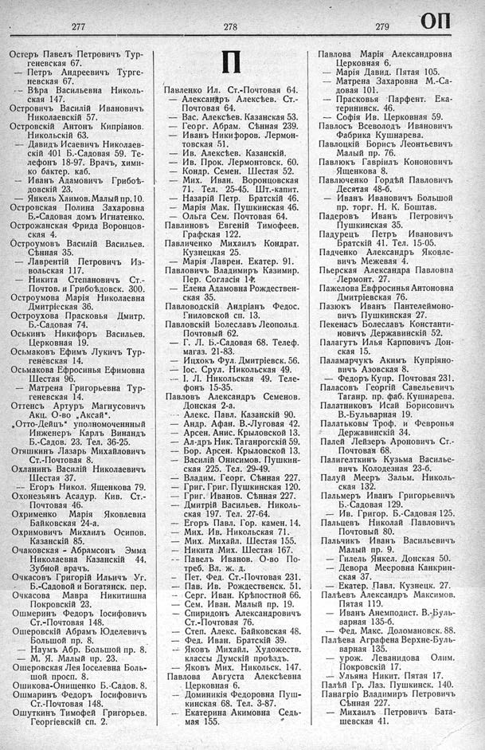

Лист источника 443
Скан

Распознанный текст
277
Остеръ Павелъ Петровичъ Тур-
геневская 67.
— Петръ Андреевичъ Турге-
невская 67.
-- Вѣра Васильевна Николь-
ская 147.
Островичъ Василій Ивановичъ
Николаевскій 57.
Островскій Антонъ Кипріанов.
Никольскій 63.
— Давидъ Исаевичъ Николаев-
скій 401 Б.-Садовая 59. Те-
лефонъ 18-97. Врачъ, хими-
ко бактер. каб.
— Иванъ Адамовичъ Грибоѣ-
довскій 23.
— Янкель Хаимов. Малый пр. 10.
Островская Полина Захаровна
Б.-Садовая домъ Игнатенко.
Острожанская Фрида Воронцов-
ская 4.
Остроумовъ Василій Васильев.
Сѣнная 35.
— Лаврентій Петровичъ Из-
вольская 117.
— Никита Степановичъ Ст.-
Почтов. и Грибоѣдовск. 300.
Остроумова Марія Николаевна
Дмитріеская 36.
Остроухова Прасковья Дмитр.
Б.-Садовая 74.
Оськинъ Никифоръ Васильев.
Церковная 19.
Осьмаковъ Ефимъ Лукичъ Тур-
геневская 14.
Осьмакова Ефросинья Ефимовна
Шестая 96.
— Матрена Григорьевна Тур-
геневская 14.
Оттенсъ Артуръ Магнусовичъ
Акц. О-во „Аксай“.
„Отто-Дейцъ“ уполномоченный
Инженеръ Карлъ Винандъ
Б.-Садов. 23. Тел. 36-25.
Отяшкинъ Лазарь Михайловичъ
Ст.-Почтовая 8.
Охланинъ Василій Николаевичъ
Шестая 37.
— Егоръ Никол. Ященкова 79.
Охонезьянъ Асадур. Кив. Ст.-
Почтовая 46.
Охрименко Марія Яковлевна
Байковская 24-а.
Охримовичъ Михаилъ Осипов.
Казанскій 85.
Очаковская - Абрамсонъ Эмма
Николаевна Казанскій 44.
Зубной врачъ.
Очкасовъ Григорій Ильичъ Уг.
Б.-Садовой и Богатянск. пер.
Очкасова Мавра Никитишна
Покровскій 23.
Ошмеринъ Федоръ Іосифовичъ
Ст.-Почтовая 148.
Ошеровскій Абрамъ Юделевичъ
Большой пр. 8.
— Наумъ Абр. Большой пр. 8.
— М. Я. Малый пр. 23.
Ошеровская Лея Іоселевна Боль-
шой просп. 8.
Ошикова-Онищенко Б.-Садов. 8.
Ошмаринъ Федоръ Іосифовичъ
Ст.-Почтовая 148.
Ошуткинъ Тимофей Григорьев.
Георгіевскій сп. 2.
278
П
Павленко Ил. Ст.-Почтовая 64.
— Александръ Алексѣев. Ст.-
Почтовая 64.
— Вас. Алексѣев. Казанская 53.
— Георг. Абрам. Сѣнная 239.
— Иванъ Никифоров. Лермон-
товская 51.
— Ив. Алексѣев. Казанскій.
— Ив. Прок. Лермонтовск. 60.
— Кондр. Семен. Шестая 52.
— Мих. Иван. Воронцовская
71. Тел. 25-45. Шт.-капит.
— Назарій Петр. Братскій 46.
— Марія Мак. Пушкинская 46.
— Ольга Сем. Почтовая 64.
Павлиновъ Евгеній Тимофеев.
Графская 122.
Павличенко Михаилъ Кондрат.
Кузнецкая 25.
— Марія Лаврен. Екатер. 91.
Павловичъ Владимиръ Казимир.
Пер. Согласія 14.
— Елена Адамовна Рождествен-
ская 35.
Павловодскій Андріанъ Федос.
Гниловской сп. 13.
Павловскій Болеславъ Леопольд.
Почтовый 62.
— Г. Л. Б.-Садовая 68. Телеф.
магаз. 21-83.
— Ицхокъ Фул. Дмитріевск. 56.
— Іос. Срул. Никольская 49.
— І. Л. Никольская 49. Теле-
фонъ 15-35.
Павловъ Александръ Семенов.
Донская 2-а.
--- Алекс. Павл. Казанскій 90.
— Андр. Афан. В.-Луговая 42.
— Арсен. Анис. Крыловской 13.
— Ал-дръ Ник. Таганрогскій 59.
— Бор. Арсен. Крыловской 13.
— Василій Онисимов. Пушкин-
ская 225. Тел. 29-49.
— Владим. Георг. Сѣнная 227.
— Григ. Григ. Пушкинская 120.
— Григ. Иванов. Сѣнная 227.
— Дмитрій Васильев. Николь-
ская 197. Тел. 27-64.
— Егоръ Павл. Гор. камен. 14.
— Мих. Ив. Никольская 71.
— Мих. Михайл. Шестая 155.
— Никита Мих. Шестая 167.
— Павелъ Иванов. О-во По-
треб. Вл. ж. д.
— Пет. Фед. Ст.-Почтовая 231.
— Пав. Ив. Рождественск. 51.
— Серг. Иван. Крѣпостной 66.
— Сем. Иван. Малый пр. 19.
— Спиридонъ Александровичъ
Ст.-Почтовая 76.
— Степ. Алекс. Байковская 48.
— Фед. Иван. Братскій 39.
— Яковъ Михайл. Художеств.
классы Думскій проѣздъ.
— Яковъ Мих. Никольск. 147.
Павлова Августа Алексѣевна
Церковная 6.
— Доминикія Федоровна Пуш-
кинская 68. Тел. 3-87.
— Екатерина Акимовна Седь-
мая 155.
279
ОП
Павлова Марія Александровна
Церковная 6.
— Марія Давид. Пятая 105.
— Матрена Захаровна М.-Са-
довая 101.
— Прасковья Парфент. Ека-
терининск. 46.
— Софія Ив. Церковная 59.
Павлосъ Всеволодъ Ивановичъ
Фабрика Кушнарева.
Павлоцкій Борисъ Леонтьевичъ
Малый пр. 76.
Павлюкъ Гавріилъ Кононовичъ
Ященкова 8.
Павлюченко Гордѣй Павловичъ
Десятая 48-б.
— Иванъ Ивановичъ Большой
пр. торг. Н. К. Боштав.
Падеровъ Иванъ Петровичъ
Пушкинская 35.
Падурецъ Петръ Ивановичъ
Братскій 41. Тел. 15-05.
Падченко Александръ Яковле-
вичъ Межевая 4.
Пьерская Александра Павловна
Лермонт. 27.
Пажелова Евфросинья Антоновна
Дмитріевская 76.
Пазpassword Иванъ Пантелеймоно-
вичъ Пушкинская 27.
Пекенасъ Болеславъ Константи-
новичъ Державинскій 52.
Палагутъ Илья Карповичъ Дон-
ская 15.
Паламарчукъ Акимъ Купріяно-
вичъ Азовская 8.
— Федоръ Купр. Почтовая 231.
Паласовъ Георгій Савельевичъ
Таганр. пр. фаб. Кушнарева.
Палатниковъ Исай Борисовичъ
В.-Бульварная 19.
Палатьковы Троф. и Февронья
Державинскій 34.
Палей Лейзеръ Ароновичъ Ст.-
Почтовая 68.
Палигеликтинъ Кузьма Василье-
вичъ Колодезная 23-б.
Палуй Мееръ Зальм. Николь-
ская 132.
Пальмеръ Иванъ Григорьевичъ
Б.-Садовая 129.
— Ив. Григор. Б.-Садовая 125.
Пальцевъ Николай Павловичъ
Почтовый 80.
Пальчикъ Иванъ Васильевичъ
Малый пр. 9.
— Гилель Янкел. Донская 50.
— Девора Мееровна Канкрин-
ская 37.
— Екатер. Павл. Кузнецк. 27.
Палѣевъ Александръ Максимов.
Пятая 119.
— Иванъ Анемподист. В.-Буль-
варная 135-б.
— Фед. Макс. Доломановск. 88.
Палѣева Аграфена Верхне-Буль-
варная 135.
— урож. Леванидова Олим.
Покровскій 17.
— Ульяна Никит. Пятая 17.
Палѣй Гр. Лаз. Пушкинск. 140.
Панагріо Владимиръ Петровичъ
Сѣнная 227.
— Михаилъ Петровичъ Бата-
шевская 41.